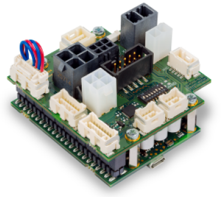

项目
|
 |
基于 STM32F103 实现 CanOpen 协议，可以低成本、实时地控制 EPOS4/EPOS2 等 CanOpen 设备，支持单电机和多电机系统。 |

|
下肢康复外骨骼，髋、膝共 6 个主动自由度。采用 STM32、EPOS4 和 maxon 电机，结合实时轨迹规划与阻抗控制，实现个性化康复训练。 |

|
便携式髋关节外骨骼，在髋关节屈曲和伸展方向提供助力，用于减轻行走负担。能在多种地形下实时识别步态相位，并通过人在回路优化为每个人调节助力力矩。 |

|
低成本的儿童步态监测系统，可以及早识别病理步态，避免发展为骨关节炎、脊柱侧弯等问题。 |